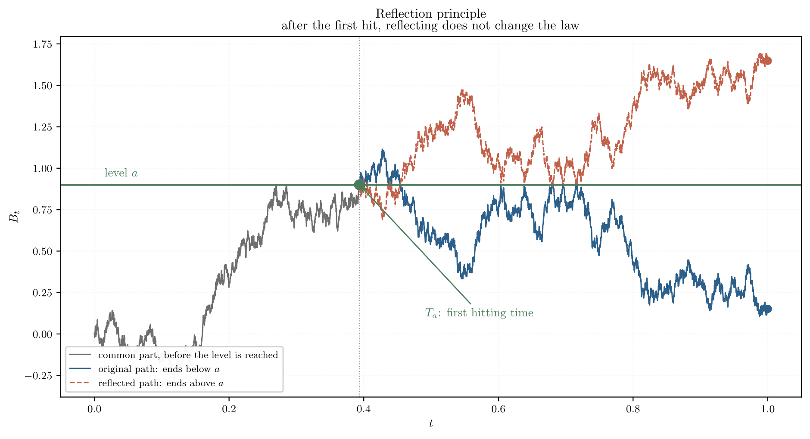
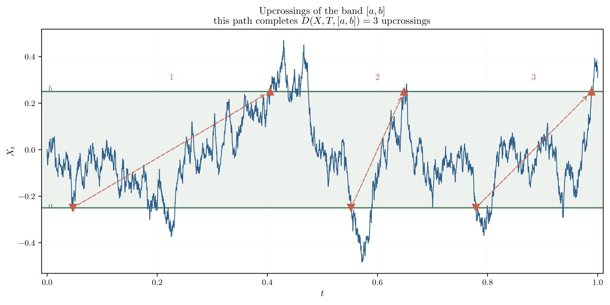
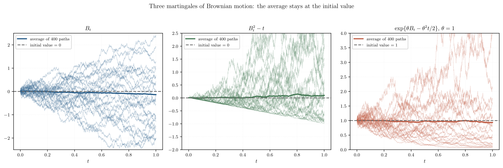
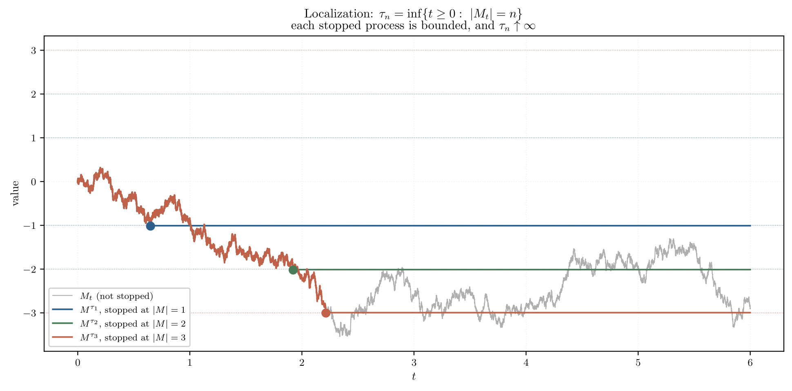
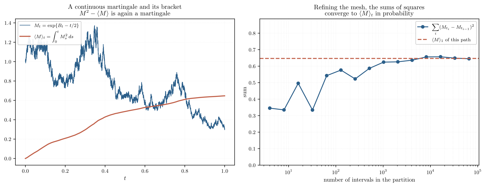
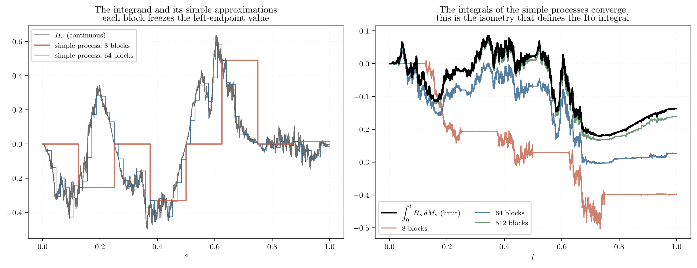
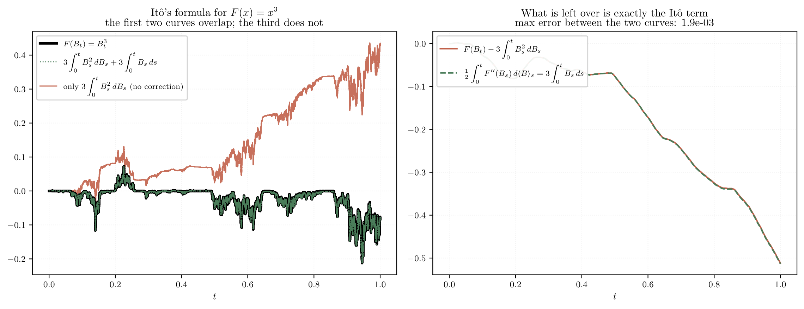
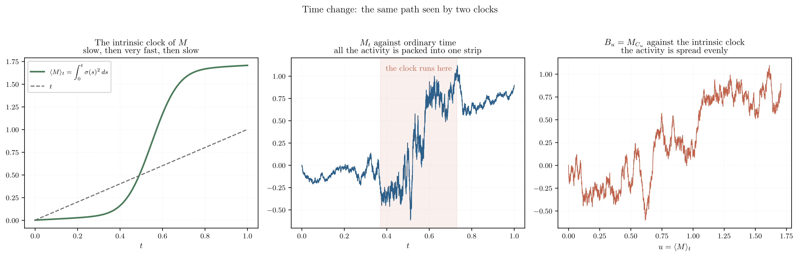

Notes from the Stochastic Calculus course taught by Dr. Sandra Palau Calderón at IIMAS, UNAM, semester 2027-1 (fall 2026). Concepts and tools for the first exam.
Simulations that make the main results visible. Each one sits next to the concept it illustrates.
For \(X\ge 0\) and \(\lambda>0\): \(P(X\ge\lambda)\le E(X)/\lambda\). Moment version:
\(P(|X-EX|\ge\lambda)\le \operatorname{Var}(X)/\lambda^2\). The case \(p=2\) of centered Markov.
For \(\varphi\) convex, with \(X\) and \(\varphi(X)\) integrable:
Conditional version: \(\varphi(E(X\mid\mathcal G))\le E(\varphi(X)\mid\mathcal G)\).
For \(\tfrac1p+\tfrac1q=1\), \(p,q>1\): \(E|XY|\le\|X\|_p\,\|Y\|_q\). With \(p=q=2\) it is Cauchy–Schwarz.
For \(X\) a right-continuous martingale, \(p\ge1\), \(\lambda>0\):
It is Markov with a supremum slipped inside, for free.
Only for \(p>1\):
equivalently \(E\big(\sup_t|X_t|^p\big)\le\big(\tfrac{p}{p-1}\big)^p\sup_s E\big(|X_s|^p\big)\).
PitfallThe constant is the Hölder conjugate; with \(p=2\) it gives 4; it fails at \(p=1\).
For \(M,N\) local martingales and \(H,K\) measurable:
Basic form: \((\langle M,N\rangle_b-\langle M,N\rangle_a)^2\le(\langle M\rangle_b-\langle M\rangle_a)(\langle N\rangle_b-\langle N\rangle_a)\).
Prob. \(\Rightarrow\) there is an a.s. convergent subsequence. Prob. + u.i. \(\Leftrightarrow L^1\).
\(0\le X_n\uparrow X\Rightarrow EX_n\uparrow EX\).
For \(X_n\ge0\): \(E(\liminf X_n)\le\liminf E(X_n)\). Also holds conditionally.
PitfallIt only gives an inequality, never an equality.
\(X_n\to X\) a.s. and \(|X_n|\le Y\in L^1\Rightarrow EX_n\to EX\) and \(X_n\to X\) in \(L^1\). Holds conditionally.
\(\sum_n P(A_n)\lt \infty\Rightarrow P(\limsup A_n)=0\).
PitfallNo independence assumption needed.
\(A_n\) independent and \(\sum_n P(A_n)=\infty\Rightarrow P(\limsup A_n)=1\).
Sufficient criteria: bounded in \(L^p\) with \(p>1\); dominated by an integrable variable.
PitfallBounded in \(L^1\) is NOT enough.
If a \(\lambda\)-system contains a \(\pi\)-system \(\mathcal P\) (closed under finite intersections), then it contains \(\sigma(\mathcal P)\). Functional version: to prove a property for all \(\sigma(\mathcal P)\)-measurable functions, it suffices to check it on the indicators of \(\mathcal P\) and show that the class where it holds is a vector space closed under bounded monotone limits.
PitfallThis is the rectangles → simple → general pattern that repeats throughout the course.
\(X_i\) i.i.d. with \(E|X_1|\lt \infty\): \(\bar X_n\to\mu\) in probability.
\(X_i\) i.i.d. with \(E|X_1|\lt \infty\): \(\bar X_n\to\mu\) a.s. If \(E|X_1|=\infty\), then \(\limsup_n|\bar X_n|=\infty\) a.s.
i.i.d. with \(\sigma^2\lt \infty\): \(\sqrt n\,(\bar X_n-\mu)/\sigma\Rightarrow N(0,1)\).
\((X_n)\) independent, \(\mathcal T=\bigcap_n\sigma(X_k:k\ge n)\) the tail \(\sigma\)-algebra. Then \(A\in\mathcal T\Rightarrow P(A)\in\{0,1\}\). Events that do not depend on any finite block are trivial.
For Brownian motion, \(\mathcal F_{0+}=\bigcap_{t>0}\mathcal F_t\) is trivial: \(A\in\mathcal F_{0+}\Rightarrow P(A)\in\{0,1\}\). Consequences: the completed natural filtration is right-continuous; Brownian motion changes sign infinitely often in \([0,\varepsilon]\); \(\limsup_{t\downarrow0}B_t/\sqrt t=+\infty\).
\(B_t/t\to0\) a.s. as \(t\to\infty\).
PitfallIt follows from time inversion plus continuity at 0.
\(E(X\mid\mathcal G)\) is the unique \(\mathcal G\)-measurable, integrable variable with \(E(\mathbf 1_A E(X\mid\mathcal G))=E(\mathbf 1_A X)\) for all \(A\in\mathcal G\). Existence by Radon–Nikodym; in \(L^2\) it is the orthogonal projection onto the subspace of \(\mathcal G\)-measurable variables.
Linearity, monotonicity, and contraction in every \(L^p\): \(\|E(X\mid\mathcal G)\|_p\le\|X\|_p\) for \(p\ge1\).
\(\mathcal H\subseteq\mathcal G\): \(E(E(X\mid\mathcal G)\mid\mathcal H)=E(X\mid\mathcal H)\). The smaller \(\sigma\)-algebra always wins.
\(Y\) \(\mathcal G\)-measurable: \(E(XY\mid\mathcal G)=Y\,E(X\mid\mathcal G)\).
\(X\) independent of \(\mathcal G\): \(E(X\mid\mathcal G)=E(X)\). \(X\) \(\mathcal G\)-measurable: \(E(X\mid\mathcal G)=X\).
\(X\) \(\mathcal G\)-measurable, \(Y\) independent of \(\mathcal G\), \(h\) bounded measurable:
\(\pi=\{0=t_0\lt \dots\lt t_n=t\}\), \(\|\pi\|=\max_i(t_i-t_{i-1})\).
PitfallRefining means \(\|\pi\|\to0\), not \(n\to\infty\).
\(V_t=\sup_\pi\sum_i|f(t_i)-f(t_{i-1})|\). If finite, \(f\) is of bounded (or finite) variation.
\(f\) has bounded variation if and only if it is the difference of two non-decreasing functions. Equivalently, \(df\) defines a signed measure \(\mu=\mu^+-\mu^-\).
\(V^{(p)}_t=\lim_{\|\pi\|\to0}\sum_i|f(t_i)-f(t_{i-1})|^p\). For \(p=2\) it is the quadratic variation.
Quadratic variation \(=t\) in \(L^2\); first-order variation infinite a.s.
That is why \(dB\) is not a measure and the Stieltjes integral does not work.
Adapted, with paths of finite variation a.s. The integral \(\int_0^t H_s\,dA_s\) exists as a Stieltjes integral if \(H\) is progressively measurable and integrable against \(\mu^++\mu^-\), and it is again of finite variation.
\(\mathcal F_t=\mathcal F_{t+}:=\bigcap_{s>t}\mathcal F_s\).
Complete and right-continuous.
càd = right-continuous; càg = left-continuous; càdlàg = right-continuous with left limits.
Measurable: \((t,\omega)\mapsto X_t(\omega)\) is \(\mathcal B[0,\infty)\otimes\mathcal F\)-measurable. Adapted: \(X_t\) is \(\mathcal F_t\)-measurable for all \(t\). Progressively measurable: for every \(t\), the restriction to \([0,t]\times\Omega\) is \(\mathcal B[0,t]\otimes\mathcal F_t\)-measurable. Predictable: measurable with respect to the \(\sigma\)-algebra generated by left-continuous adapted processes.
Progressive \(\Rightarrow\) adapted. Càd (or càg) + adapted \(\Rightarrow\) progressive. Predictable \(\Rightarrow\) adapted, and it is what prevents betting after knowing the outcome.
Equivalent: same finite-dimensional distributions. Modification: \(P(X_t=Y_t)=1\) for each \(t\). Indistinguishable: \(P(X_t=Y_t\ \forall t)=1\).
Indistinguishable \(\Rightarrow\) modification \(\Rightarrow\) equivalent. Modification + both càd \(\Rightarrow\) indistinguishable.
\(\{T\le t\}\in\mathcal F_t\) for all \(t\). If the filtration is right-continuous, this is equivalent to \(\{T\lt t\}\in\mathcal F_t\) (optional time).
\(\mathcal F_T=\{A: A\cap\{T\le t\}\in\mathcal F_t\ \forall t\}\). If \(\theta\le\tau\) then \(\mathcal F_\theta\subseteq\mathcal F_\tau\).
\(\theta\wedge\tau\), \(\theta\vee\tau\), \(\theta+\tau\) are stopping times. The difference is not. \(\sup_n\tau_n\) always; \(\inf_n\tau_n\), \(\limsup\), \(\liminf\), \(\lim\) require a right-continuous filtration.
\(T_A=\inf\{t\ge0: X_t\in A\}\), with \(\inf\varnothing=\infty\).
\(A\) open + \(X\) càd + right-continuous filtration \(\Rightarrow\) stopping time.
\(A\) closed + \(X\) continuous \(\Rightarrow\) stopping time (no right-continuity of the filtration needed).
\(X^T_t=X_{T\wedge t}\): the original path up to \(T\), constant afterwards.
Defined through the Fourier transform:
\(\Sigma\) is positive semidefinite and \(\theta^\top\Sigma\theta=\operatorname{Var}(\langle\theta,X\rangle)\).
PitfallThe definition via a density fails when \(\Sigma\) is singular.
\(X\) is Gaussian \(\Leftrightarrow\) every linear combination \(\langle\theta,X\rangle\) is a real normal. Within the same Gaussian vector: uncorrelated \(\Leftrightarrow\) independent.
PitfallFalse if the normals do not form a jointly Gaussian vector.
All its f.d.d. are Gaussian; it is determined by \(m(t)=E(X_t)\) and \(K(s,t)=\operatorname{Cov}(X_s,X_t)\), with \(K\) positive semidefinite. Conversely, every PSD kernel defines a process (Kolmogorov extension).
(i) \(B_0=0\) a.s., independent and stationary increments with \(B_t-B_s\sim N(0,t-s)\), continuous paths.
(ii) Centered continuous Gaussian process with \(K(s,t)=\min(s,t)\).
(iii) Continuous local martingale with \(B_0=0\) and \(\langle B\rangle_t=t\) (Lévy).
A continuous version exists. Routes: Donsker, Kolmogorov–Chentsov, Lévy’s construction (dyadic, with coefficient \(2^{-(n+1)/2}\)).
If \(B\) is Brownian motion, so are
(reflection, self-similarity, inversion, time reversal).
Chapman–Kolmogorov; heat equation \(\partial_t p=\tfrac12\partial_{yy}p\).
If \(E|X_t-X_s|^p\le C|t-s|^{1+\varepsilon}\), there is a Hölder-\(\alpha\) modification for every \(\alpha\lt \varepsilon/p\). Brownian motion: Hölder-\(\alpha\) for every \(\alpha\lt \tfrac12\), for no \(\alpha\ge\tfrac12\). Consequently it is nowhere differentiable.
\(E\big(f(B_{t+s})\mid\mathcal F_s\big)=P_tf(B_s)\).
\(T\) a stopping time. Conditioned on \(\{T\lt \infty\}\), the process \(W_t=B_{T+t}-B_T\) is Brownian and independent of \(\mathcal F_T\).
PitfallThe proof discretizes \(T\) by rounding UP.
With \(T_a=\inf\{t:B_t\ge a\}\) and \(S_t=\sup_{s\le t}B_s\):
Consequences: \(P(T_a\lt \infty)=1\) but \(E(T_a)=\infty\).

\(X\) adapted. Submartingale: \(E(X_t^+)\lt \infty\) and \(E(X_t\mid\mathcal F_s)\ge X_s\). Supermartingale: \(E(X_t^-)\lt \infty\) and \(E(X_t\mid\mathcal F_s)\le X_s\). Martingale: \(E|X_t|\lt \infty\) and \(E(X_t\mid\mathcal F_s)=X_s\).
PitfallThe integrability is asymmetric on purpose; sub = tends to go up.
\(X\) submartingale and \(f\) convex non-decreasing with \(f(X)\) integrable \(\Rightarrow f(X)\) submartingale. If \(X\) is a martingale, \(f\) need not be non-decreasing.
Hence \(|B_t|\) and \(B_t^2\) are submartingales, and \(|X|^p\) is a submartingale for \(p\ge1\), the basis of Doob’s maximal inequality.
Martingale: \(E(X_t)=E(X_0)\) is constant. Submartingale: \(t\mapsto E(X_t)\) is non-decreasing.
\(H\) predictable, bounded, non-negative; \(X\) a (sub)martingale. Then \(Y_n=X_0+\sum_{i\le n}H_i(X_i-X_{i-1})\) is a (sub)martingale.
With \(H_n=\mathbf 1_{\{n\le T\}}\), predictable since \(\mathbf 1_{\{n\le T\}}=1-\mathbf 1_{\{T\le n-1\}}\), one gets \(Y_n=X_{T\wedge n}\): stopping preserves the martingale property.
\(D(X,T,[a,b])\) counts how many times the path rises from \(a\) to \(b\). Inequality:

If \(\sup_n E(X_n^+)\lt \infty\), then \(X_n\) converges a.s. to a finite, integrable limit.
PitfallIt is a.s. convergence, not in \(L^1\).
Every martingale with respect to a right-continuous, complete filtration admits a modification with càdlàg paths that is still a martingale.
The following are equivalent: (i) \(\lim_t X_t\) exists in \(L^1\); (ii) there is \(X_\infty\in L^1\) with \(X_t=E(X_\infty\mid\mathcal F_t)\); (iii) the family is uniformly integrable. If they hold, \(X_\infty=\lim_t X_t\) a.s. Bounded in \(L^p\) with \(p>1\Rightarrow\) they hold.
PitfallConverging a.s. is NOT enough: \(\exp\{B_t-t/2\}\to0\) and is not closed.
\(X\) a closed (u.i.) martingale, \(\theta\le\tau\) stopping times. Then \(X_\theta,X_\tau\in L^1\) and
in particular \(E(X_\theta)=E(X_\tau)=E(X_0)\). Elementary version: it suffices that \(S\le T\) be bounded stopping times, no u.i. required. Converse: an integrable adapted process is a martingale if and only if \(E(X_S)=E(X_T)\) for all bounded stopping times \(S\le T\).
PitfallWithout u.i. it fails: the symmetric random walk and \(T_8\) give \(E(X_{T_8})=8\ne0\).
Stop at \(\tau\wedge t\) (bounded) → get a moment bound uniform in \(t\) → conclude u.i. → pass to the limit.
\(T\) a stopping time with \(E(T)\lt \infty\): \(E(B_T)=0\), \(E(B_T^2)=E(T)\).
They all come from \(\partial_tF+\tfrac12\partial_{xx}F=0\).

Continuous and adapted, with a sequence of stopping times \(\tau_n\uparrow\infty\) such that each \(M^{\tau_n}\mathbf 1_{\{\tau_n>0\}}\) is a u.i. martingale. Canonical reducing sequence: \(T_n=\inf\{t:|M_t|=n\}\) if \(M_0=0\).
PitfallWe don’t know whether \(M_t\) is integrable; it only is after stopping.

\(M\ge0\) and \(M_0\in L^1\Rightarrow\) supermartingale (Fatou).
\(\sup_{s\le t}|M_s|\in L^1\ \forall t\Rightarrow\) martingale.
\(\sup_{s\ge0}|M_s|\in L^1\Rightarrow\) u.i. martingale.
It is constant. The engine behind every uniqueness result in the course: if two candidates work, their difference is a continuous martingale of finite variation, hence zero.
For \(M\) a continuous local martingale there is a unique process \(\langle M\rangle\), continuous, non-decreasing, adapted and zero at zero, such that \(M^2-\langle M\rangle\) is a local martingale, and
For Brownian motion, \(\langle B\rangle_t=t\).

\(\langle M,N\rangle\) is the unique continuous finite-variation process, zero at zero, such that \(MN-\langle M,N\rangle\) is a local martingale. Polarization: \(\langle M,N\rangle=\tfrac14\big(\langle M+N\rangle-\langle M-N\rangle\big)\). Bilinear, symmetric, \(\langle M,M\rangle=\langle M\rangle\ge0\) non-decreasing. \(M\perp N\) independent \(\Rightarrow\langle M,N\rangle=0\).
\(\langle M^T\rangle=\langle M\rangle^T\), \(\langle M^T,N^T\rangle=\langle M,N\rangle^T\).
\(M\) a continuous local martingale, \(M_0=0\):
\(E(\langle M\rangle_t)\lt \infty\ \forall t\Leftrightarrow M\) is a square-integrable martingale.
\(E(\langle M\rangle_\infty)\lt \infty\Leftrightarrow M\) is a martingale bounded in \(L^2\); then \(M^2-\langle M\rangle\) is u.i.
\(\langle M\rangle_\infty=0\Leftrightarrow M\) is indistinguishable from 0.
Those of \(M\) and those of \(\langle M\rangle\) coincide a.s.
with \((M,N)_{\mathbb H^2}=E(\langle M,N\rangle_\infty)=E(M_\infty N_\infty)\) and \(\|M\|_{\mathbb H^2}=E(\langle M\rangle_\infty)^{1/2}=\|M_\infty\|_{L^2}\).
For \(M\in\mathbb H^2\) and \(H\in L^2(M)\) there is a unique \(H\cdot M\in\mathbb H^2\) with
and the map \(H\mapsto H\cdot M\) is an isometry: \(\|H\cdot M\|_{\mathbb H^2}=\|H\|_{L^2(M)}\).
PitfallContinuity of the functional comes from Kunita–Watanabe; then Riesz.
\(H_s=\sum_i H_i\mathbf 1_{(t_i,t_{i+1}]}(s)\) with \(H_i\) \(\mathcal F_{t_i}\)-measurable:
They are dense in \(L^2(M)\); the general integral is their limit.

\(X\) a continuous semimartingale, \(H\) continuous and adapted, \(\|\pi_n\|\to0\):
PitfallEvaluate at the LEFT endpoint; the midpoint gives Stratonovich.
Bilinear; associative \(K\cdot(H\cdot M)=(KH)\cdot M\); preserves the class (local martingale or finite variation); and \((H\cdot X)^T=(H\mathbf 1_{[0,T]})\cdot X=H\cdot X^T\).
If \(E\int_0^T H_s^2\,d\langle M\rangle_s\lt \infty\):
Progressively measurable with \(\sup_{s\le t}|H_s|\lt \infty\) a.s. for all \(t\). Every continuous adapted process is one, and this is enough for both integrals to exist.
\(X_t=X_0+M_t+A_t\) with \(M\) a continuous local martingale and \(A\) continuous of finite variation, \(M_0=A_0=0\). The decomposition is unique. Define \(\langle X\rangle=\langle M\rangle\) and \(\langle X,Y\rangle=\langle M,N\rangle\), and
\(L^2_{\mathrm{loc}}(M)\) requires \(\int_0^t H_s^2\,d\langle M\rangle_s\lt \infty\) a.s. (no expectation, on compacts). The integral is extended by localization with \(T_n=\inf\{t:\langle M\rangle_t+\int_0^t H^2\,d\langle M\rangle\ge n\}\).
\(X,Y\) continuous semimartingales:
In particular \(X_t^2=X_0^2+2\int_0^t X\,dX+\langle X\rangle_t\).
\(X\) a continuous semimartingale, \(F\in C^2\):
Multidimensional, \(F\in C^2(\mathbb R^n)\):

Second-order Taylor with
For \(f\in C^2(\mathbb R_+\times\mathbb R)\),
so \(\partial_tf+\tfrac12\partial_{xx}f=0\) (heat equation) \(\Rightarrow f(t,B_t)\) is a local martingale.
The unique solution of \(Z_t=e^{X_0}+\int_0^t Z_s\,dX_s\):
With \(\lambda\in\mathbb C\): \(\mathcal E(\lambda M)_t=\exp\{\lambda M_t-\tfrac{\lambda^2}{2}\langle M\rangle_t\}\).
PitfallWith \(\lambda=i\) the sign flips and it stays bounded in modulus.
\(M^1,\dots,M^n\) continuous local martingales, zero at zero, with \(\langle M^j,M^k\rangle_t=t\,\mathbf 1_{\{j=k\}}\Rightarrow(M^1,\dots,M^n)\) is a Brownian motion in \(\mathbb R^n\); moreover each \(M^j\) is a real Brownian motion and they are mutually independent.
\((C_t)\) non-decreasing, càdlàg, with each \(C_s\) a stopping time. With \(C_s=\inf\{t:\langle M\rangle_t>s\}\) and \(\mathcal G_s=\mathcal F_{C_s}\), the process \(B_s=M_{C_s}\) is Brownian and \(M_t=B_{\langle M\rangle_t}\) (Dambis–Dubins–Schwarz).
